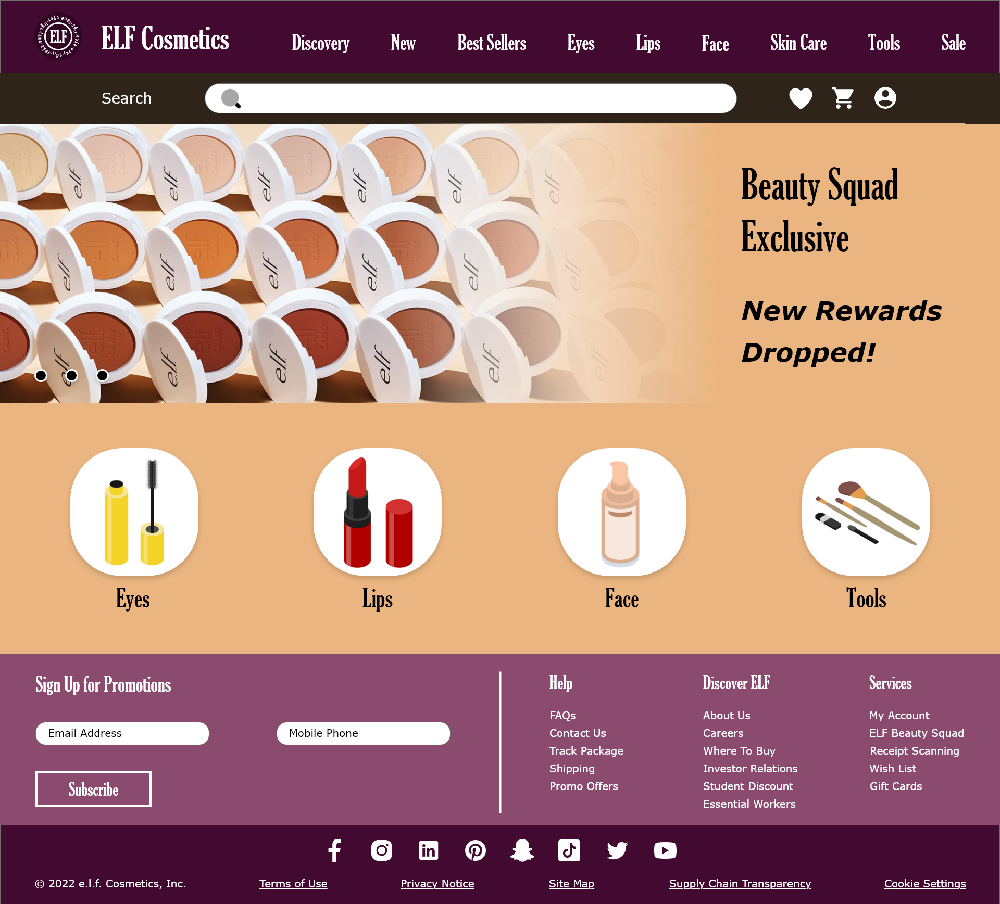

E.L.F. Rebranding
Digital Press Kit, 2022
A full redesign of the E.L.F. cosmetics brand, including a website mockup, promotional video, and poster. The website mockup was designed in Adobe XD. The promotional video was edited in Adobe Premiere using various templates and transitions. Lastly, the poster was created in Adobe Illustrator. The typography, color scheme, and brand identity were considered in the redesign process.

E.L.F. Poster
E.L.F. Webpage 1

E.L.F. Webpage 2
E.L.F. Webpage 3
E.L.F. Promotional Video